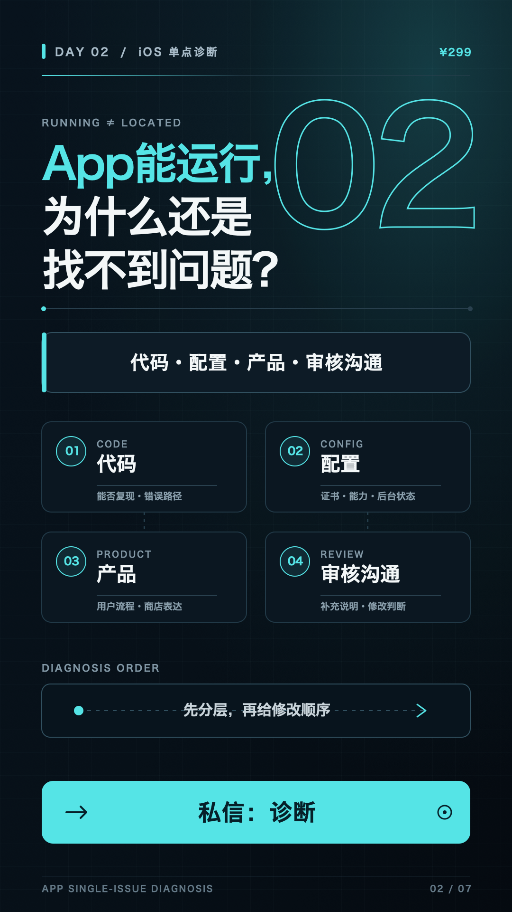

DAY 02 · ¥299 诊断 · 私信「诊断」
能运行，不等于问题已定位。
用代码、配置、产品、审核沟通四层判断，解释单点诊断的边界。
今日验收
- 发布视频、X、小红书与英文 Short。
- 完成 7 条精准互动。
- 1 个有效私信、1 份资格资料。
10 小时安排
- 复盘 Day 1 数据，空值填 0。
- 完成中英文同源脚本。
- 录制自有项目画面并剪辑。
- 发布并只判断是否可购买。

打开 Day 2 竖屏封面 PNG ↗